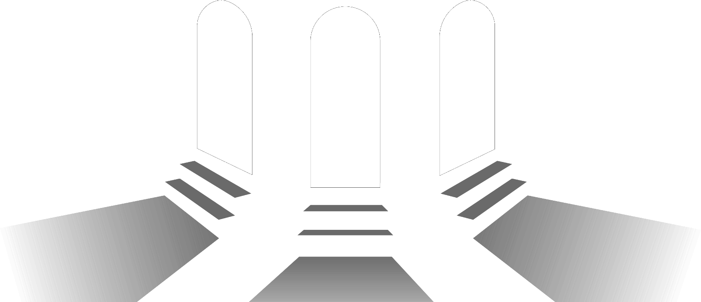

De una foto de referencia a la mezcla exacta de tus pigmentos
Elegí una paleta de referencia clásica, o armá la tuya con lo que tenés en el estudio.
Tabla local, sin conexión a internet. Winsor & Newton toma valores de una carta de color oficial escaneada; el resto de las marcas son aproximaciones estándar de pigmento. Ninguna reemplaza la ficha técnica real del fabricante.
Subí la foto: el color se extrae automáticamente detectando el área de pintura sobre el blanco de la hoja.
Subí o fotografiá tu referencia. Cada toque con el gotero agrega, abajo, el color elegido junto con los pigmentos que necesitás para lograrlo.
Cada punto que tocás en la foto queda registrado acá, con la receta de pigmentos para lograrlo.